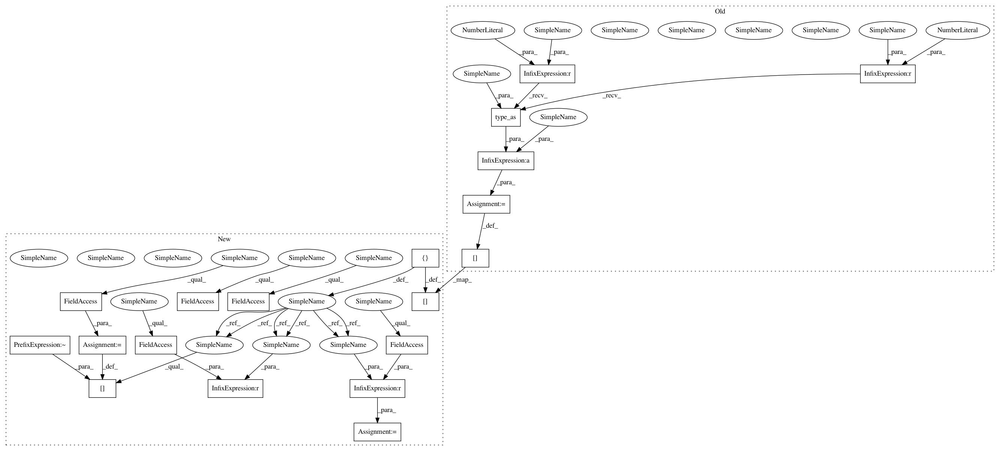

bcdec7cdfadef83ea07a918a973aba4220177eaf,models/AttModel.py,AttModel,_diverse_sample,#AttModel#,346
Before Change
// stop when all finished
if t == 0:
unfinished = it > 0
else:
unfinished = (seq[:,t-1] > 0) & (it > 0) // changed
it = it * unfinished.type_as(it)
seq[:,t] = it
seqLogprobs[:,t] = sampleLogprobs.view(-1)
return torch.stack(seq_table, 1).reshape(batch_size * group_size, -1), torch.stack(seqLogprobs_table, 1).reshape(batch_size * group_size, -1)
After Change
trigrams = trigrams_table[divm]
if t >= 0 and t <= self.seq_length-1:
if t == 0: // input <bos>
it = fc_feats.new_full([batch_size], self.bos_idx, dtype=torch.long)
else:
it = seq[:, t-1] // changed
logprobs, state_table[divm] = self.get_logprobs_state(it, p_fc_feats, p_att_feats, pp_att_feats, p_att_masks, state_table[divm]) // changed
logprobs = F.log_softmax(logprobs / temperature, dim=-1)
// Add diversity
if divm > 0:
unaug_logprobs = logprobs.clone()
for prev_choice in range(divm):
prev_decisions = seq_table[prev_choice][:, t]
logprobs[:, prev_decisions] = logprobs[:, prev_decisions] - diversity_lambda
if decoding_constraint and t > 0:
tmp = logprobs.new_zeros(logprobs.size())
tmp.scatter_(1, seq[:,t-1].data.unsqueeze(1), float("-inf"))
logprobs = logprobs + tmp
if remove_bad_endings and t > 0:
tmp = logprobs.new_zeros(logprobs.size())
prev_bad = np.isin(seq[:,t-1].data.cpu().numpy(), self.bad_endings_ix)
// Impossible to generate remove_bad_endings
tmp[torch.from_numpy(prev_bad.astype("uint8")), 0] = float("-inf")
logprobs = logprobs + tmp
// Mess with trigrams
if block_trigrams and t >= 3:
// Store trigram generated at last step
prev_two_batch = seq[:,t-3:t-1]
for i in range(batch_size): // = seq.size(0)
prev_two = (prev_two_batch[i][0].item(), prev_two_batch[i][1].item())
current = seq[i][t-1]
if t == 3: // initialize
trigrams.append({prev_two: [current]}) // {LongTensor: list containing 1 int}
elif t > 3:
if prev_two in trigrams[i]: // add to list
trigrams[i][prev_two].append(current)
else: // create list
trigrams[i][prev_two] = [current]
// Block used trigrams at next step
prev_two_batch = seq[:,t-2:t]
mask = torch.zeros(logprobs.size(), requires_grad=False).cuda() // batch_size x vocab_size
for i in range(batch_size):
prev_two = (prev_two_batch[i][0].item(), prev_two_batch[i][1].item())
if prev_two in trigrams[i]:
for j in trigrams[i][prev_two]:
mask[i,j] += 1
// Apply mask to log probs
//logprobs = logprobs - (mask * 1e9)
alpha = 2.0 // = 4
logprobs = logprobs + (mask * -0.693 * alpha) // ln(1/2) * alpha (alpha -> infty works best)
it, sampleLogprobs = self.sample_next_word(logprobs, sample_method, 1)
// stop when all finished
if t == 0:
unfinished = it != self.eos_idx
else:
unfinished = seq[:,t-1] != self.pad_idx & seq[:,t-1] != self.eos_idx
it[~unfinished] = self.pad_idx
unfinished = unfinished & (it != self.eos_idx) // changed
seq[:,t] = it
seqLogprobs[:,t] = sampleLogprobs.view(-1)
return torch.stack(seq_table, 1).reshape(batch_size * group_size, -1), torch.stack(seqLogprobs_table, 1).reshape(batch_size * group_size, -1)
In pattern: SUPERPATTERN
Frequency: 4
Non-data size: 19
Instances
Project Name: ruotianluo/ImageCaptioning.pytorch
Commit Name: bcdec7cdfadef83ea07a918a973aba4220177eaf
Time: 2020-04-02
Author: rluo@ttic.edu
File Name: models/AttModel.py
Class Name: AttModel
Method Name: _diverse_sample
Project Name: ruotianluo/ImageCaptioning.pytorch
Commit Name: bcdec7cdfadef83ea07a918a973aba4220177eaf
Time: 2020-04-02
Author: rluo@ttic.edu
File Name: models/AttModel.py
Class Name: AttModel
Method Name: _diverse_sample
Project Name: ruotianluo/ImageCaptioning.pytorch
Commit Name: bcdec7cdfadef83ea07a918a973aba4220177eaf
Time: 2020-04-02
Author: rluo@ttic.edu
File Name: models/AttModel.py
Class Name: AttModel
Method Name: _sample